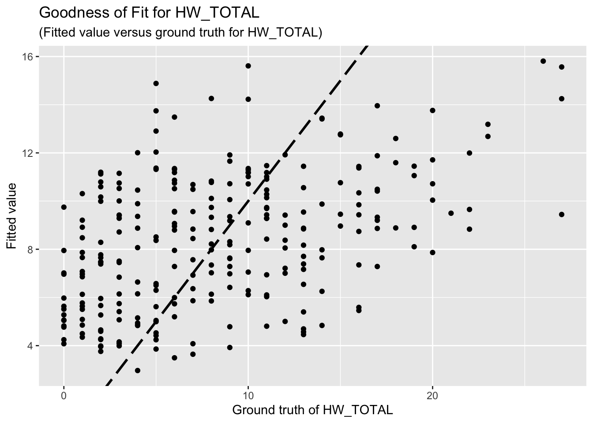
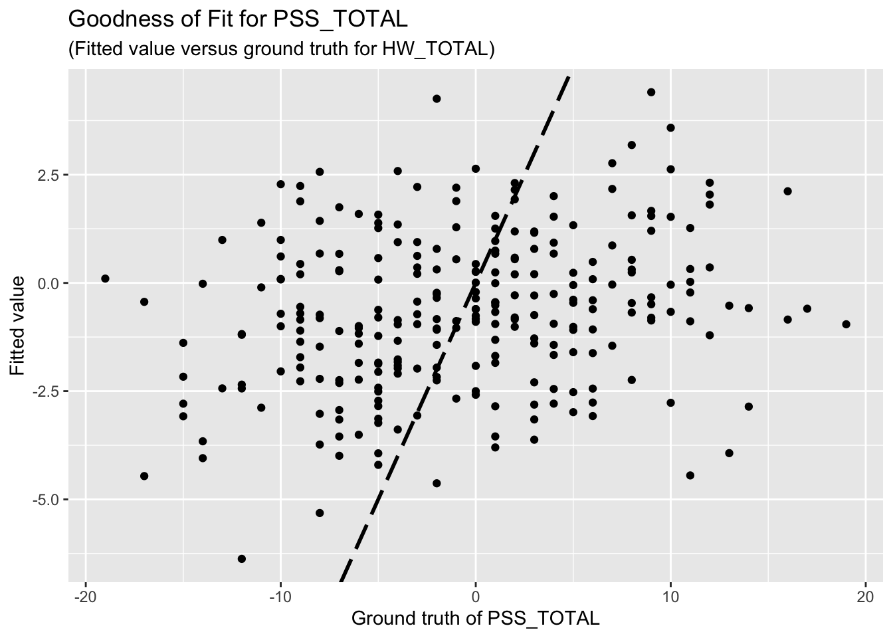

Linear Regression Analysis
Junhui He, edited by Paloma C.
2025-03-04
Last updated: 2025-03-04
Checks: 6 1
Knit directory: QUAIL-Mex/
This reproducible R Markdown analysis was created with workflowr (version 1.7.1). The Checks tab describes the reproducibility checks that were applied when the results were created. The Past versions tab lists the development history.
The R Markdown file has unstaged changes. To know which version of
the R Markdown file created these results, you’ll want to first commit
it to the Git repo. If you’re still working on the analysis, you can
ignore this warning. When you’re finished, you can run
wflow_publish to commit the R Markdown file and build the
HTML.
Great job! The global environment was empty. Objects defined in the global environment can affect the analysis in your R Markdown file in unknown ways. For reproduciblity it’s best to always run the code in an empty environment.
The command set.seed(20241009) was run prior to running
the code in the R Markdown file. Setting a seed ensures that any results
that rely on randomness, e.g. subsampling or permutations, are
reproducible.
Great job! Recording the operating system, R version, and package versions is critical for reproducibility.
Nice! There were no cached chunks for this analysis, so you can be confident that you successfully produced the results during this run.
Great job! Using relative paths to the files within your workflowr project makes it easier to run your code on other machines.
Great! You are using Git for version control. Tracking code development and connecting the code version to the results is critical for reproducibility.
The results in this page were generated with repository version f0811f0. See the Past versions tab to see a history of the changes made to the R Markdown and HTML files.
Note that you need to be careful to ensure that all relevant files for
the analysis have been committed to Git prior to generating the results
(you can use wflow_publish or
wflow_git_commit). workflowr only checks the R Markdown
file, but you know if there are other scripts or data files that it
depends on. Below is the status of the Git repository when the results
were generated:
Ignored files:
Ignored: .DS_Store
Ignored: .RData
Ignored: .Rhistory
Ignored: .Rproj.user/
Ignored: analysis/.DS_Store
Ignored: analysis/.RData
Ignored: analysis/.Rhistory
Ignored: code/.DS_Store
Ignored: data/.DS_Store
Unstaged changes:
Modified: analysis/Regression-Analysis_PC.Rmd
Note that any generated files, e.g. HTML, png, CSS, etc., are not included in this status report because it is ok for generated content to have uncommitted changes.
These are the previous versions of the repository in which changes were
made to the R Markdown
(analysis/Regression-Analysis_PC.Rmd) and HTML
(docs/Regression-Analysis_PC.html) files. If you’ve
configured a remote Git repository (see ?wflow_git_remote),
click on the hyperlinks in the table below to view the files as they
were in that past version.
| File | Version | Author | Date | Message |
|---|---|---|---|---|
| Rmd | f0811f0 | Paloma | 2025-03-04 | reduced NAs |
Attaching package: 'mice'The following object is masked from 'package:stats':
filterThe following objects are masked from 'package:base':
cbind, rbindLoading required package: MatrixLoaded glmnet 4.1-81 Introduction
Our research questions are: A) What variables measured using Paloma’s questionnaires are good predictors of HWISE total scores? B) What questions are good predictors of alternative water insecurity measurements, such as hours of water supply, or type of supply (continuous or intermittent)? C) Does water insecurity has any association with Perceived stress scores (PSS)? If so, what variables/aspects of water insecurity are driving this stress levels?
Here I repeat the analyses conducted by Junhui He, but adding and removing a few variables that could make more sense as predictors of the Total HWISE score or Total PSS score. These are the two linear regression models we run earlier:
HW_TOTAL ~ D_AGE + D_HH_SIZE + D_CHLD + HLTH_SMK + HLTH_CPAIN_CAT + HLTH_CDIS_CAT + SES_SC_Total
PSS_TOTAL ~ D_AGE + D_HH_SIZE + D_CHLD + HLTH_SMK + HLTH_CPAIN_CAT + HLTH_CDIS_CAT + SES_SC_Total
The two new linear regression models are different from the previous ones: 1. I removed HLTH_SMK, HLTH_CPAIN_CAT, and HLTH_CDIS_CAT 2. I added D_LOC_TIME, SEASON, W_WS_LOC, W_WC_WI, HRS_WEEK I also added HWISE_TOTAL as potential predictor of PSS
1.b Variable descriptions for quick reference
Pending
2 Data preparation
We remove rows with missing data.
HW_TOTAL is calculated by adding up all the HWISE scores; PSS_TOTAL is calculated by adding up PSS 1,2,3, 8, 11, 12, 14, and substracting 4,5,6,7,9,10, and 13.
[1] "ID" "D_YRBR" "D_LOC_TIME" "D_AGE"
[5] "D_HH_SIZE" "D_CHLD" "HLTH_SMK" "SES_SC_Total"
[9] "SEASON" "W_WS_LOC" "HW_WORRY" "HW_INTERR"
[13] "HW_CLOTHES" "HW_PLANS" "HW_FOOD" "HW_HANDS"
[17] "HW_BODY" "HW_DRINK" "HW_ANGRY" "HW_SLEEP"
[21] "HW_NONE" "HW_SHAME" "PSS1" "PSS2"
[25] "PSS3" "PSS4" "PSS5" "PSS6"
[29] "PSS7" "PSS8" "PSS9" "PSS10"
[33] "PSS11" "PSS12" "PSS13" "PSS14"
[37] "HLTH_CPAIN_CAT" "HLTH_CDIS_CAT" "HW_TOTAL" "W_WC_WI"
[41] "HRS_WEEK" [1] 402 12[1] 262 12 [1] "ID" "D_LOC_TIME" "D_AGE" "D_HH_SIZE" "D_CHLD"
[6] "SES_SC_Total" "SEASON" "W_WS_LOC" "HW_TOTAL" "W_WC_WI"
[11] "HRS_WEEK" "PSS_TOTAL" 3 Results
3.1 HWISE scores, variable set 1
The regression results for HW is summarized as follows.
Call:
lm(formula = HW_TOTAL ~ D_AGE + D_HH_SIZE + D_CHLD + SES_SC_Total,
data = reg_dataset)
Residuals:
Min 1Q Median 3Q Max
-9.2625 -4.7048 -0.9282 4.2555 17.6891
Coefficients:
Estimate Std. Error t value Pr(>|t|)
(Intercept) 13.600647 2.159219 6.299 1.29e-09 ***
D_AGE -0.076564 0.057009 -1.343 0.180
D_HH_SIZE -0.084970 0.107605 -0.790 0.430
D_CHLD 0.046960 0.352601 0.133 0.894
SES_SC_Total -0.018117 0.008953 -2.024 0.044 *
---
Signif. codes: 0 '***' 0.001 '**' 0.01 '*' 0.05 '.' 0.1 ' ' 1
Residual standard error: 6.124 on 257 degrees of freedom
Multiple R-squared: 0.02832, Adjusted R-squared: 0.0132
F-statistic: 1.873 on 4 and 257 DF, p-value: 0.1156The goodness-of-fit for HW regression is given as follow.
 ### 3.2 HWISE scores, variable set 2
### 3.2 HWISE scores, variable set 2
Call:
lm(formula = HW_TOTAL ~ D_LOC_TIME + SEASON + W_WS_LOC + W_WC_WI +
HRS_WEEK + D_AGE + D_HH_SIZE + D_CHLD + SES_SC_Total, data = reg_dataset)
Residuals:
Min 1Q Median 3Q Max
-10.0250 -4.4560 -0.6338 3.9961 17.7519
Coefficients:
Estimate Std. Error t value Pr(>|t|)
(Intercept) 15.823524 2.488335 6.359 9.48e-10 ***
D_LOC_TIME -0.045571 0.032445 -1.405 0.16138
SEASON -1.952959 0.774237 -2.522 0.01227 *
W_WS_LOC -2.896364 1.029981 -2.812 0.00531 **
W_WC_WI 1.027137 1.099923 0.934 0.35129
HRS_WEEK -0.039330 0.008763 -4.488 1.09e-05 ***
D_AGE 0.020739 0.057475 0.361 0.71853
D_HH_SIZE -0.005713 0.104616 -0.055 0.95649
D_CHLD -0.219530 0.324742 -0.676 0.49965
SES_SC_Total -0.010837 0.008333 -1.300 0.19462
---
Signif. codes: 0 '***' 0.001 '**' 0.01 '*' 0.05 '.' 0.1 ' ' 1
Residual standard error: 5.593 on 252 degrees of freedom
Multiple R-squared: 0.2054, Adjusted R-squared: 0.1771
F-statistic: 7.24 on 9 and 252 DF, p-value: 2.344e-09The goodness-of-fit for HW regression is given as follow.

3.3 PSS
The regression results for PSS is summarized as follows.
Call:
lm(formula = PSS_TOTAL ~ D_LOC_TIME + SEASON + W_WS_LOC + W_WC_WI +
HRS_WEEK + D_AGE + D_HH_SIZE + D_CHLD + SES_SC_Total + HW_TOTAL,
data = reg_dataset)
Residuals:
Min 1Q Median 3Q Max
-19.1000 -4.9145 -0.1356 5.2343 19.9553
Coefficients:
Estimate Std. Error t value Pr(>|t|)
(Intercept) -1.723443 3.474511 -0.496 0.6203
D_LOC_TIME -0.049014 0.042219 -1.161 0.2468
SEASON 0.460930 1.016147 0.454 0.6505
W_WS_LOC 0.626112 1.355834 0.462 0.6446
W_WC_WI 1.221650 1.428173 0.855 0.3931
HRS_WEEK 0.010989 0.011804 0.931 0.3528
D_AGE -0.094480 0.074518 -1.268 0.2060
D_HH_SIZE -0.150318 0.135603 -1.109 0.2687
D_CHLD 0.812502 0.421308 1.929 0.0549 .
SES_SC_Total 0.003193 0.010838 0.295 0.7685
HW_TOTAL 0.201881 0.081652 2.472 0.0141 *
---
Signif. codes: 0 '***' 0.001 '**' 0.01 '*' 0.05 '.' 0.1 ' ' 1
Residual standard error: 7.249 on 251 degrees of freedom
Multiple R-squared: 0.06021, Adjusted R-squared: 0.02277
F-statistic: 1.608 on 10 and 251 DF, p-value: 0.1045The goodness-of-fit for PSS regression is given as follow.

8 x 1 sparse Matrix of class "dgCMatrix"
s0
(Intercept) 0.2513164
D_AGE .
D_HH_SIZE .
D_CHLD .
SES_SC_Total .
SEASON .
W_WS_LOC .
HW_TOTAL 0.97005698 x 1 sparse Matrix of class "dgCMatrix"
s0
(Intercept) -1.53597039
D_AGE .
D_HH_SIZE .
D_CHLD 0.01132684
SES_SC_Total .
SEASON .
W_WS_LOC .
HW_TOTAL 0.100458424 Discussion
4.2 Questions
Is it reasonable to use HW_TOTAL or PSS_TOTAL as response variables and other aforementioned variables as predictors? If not, how should I choose response variables and predictors?
Previously, I mentioned feature selection, a method used to identify the most influential variables among a set of predictors. Here, “the most influential variable” refers to one that has a significant impact on the response. However, since your cleaned dataset contains only eight predictors, I believe feature selection is unnecessary. Moreover, feature selection is typically employed to prevent overfitting, whereas our primary problem is underfitting.
R version 4.4.2 (2024-10-31)
Platform: aarch64-apple-darwin20
Running under: macOS Sequoia 15.3.1
Matrix products: default
BLAS: /Library/Frameworks/R.framework/Versions/4.4-arm64/Resources/lib/libRblas.0.dylib
LAPACK: /Library/Frameworks/R.framework/Versions/4.4-arm64/Resources/lib/libRlapack.dylib; LAPACK version 3.12.0
locale:
[1] en_US.UTF-8/en_US.UTF-8/en_US.UTF-8/C/en_US.UTF-8/en_US.UTF-8
time zone: America/Detroit
tzcode source: internal
attached base packages:
[1] stats graphics grDevices utils datasets methods base
other attached packages:
[1] glmnet_4.1-8 Matrix_1.7-1 naniar_1.1.0 ggplot2_3.5.1
[5] mice_3.17.0 workflowr_1.7.1
loaded via a namespace (and not attached):
[1] gtable_0.3.6 shape_1.4.6.1 xfun_0.49 bslib_0.8.0
[5] visdat_0.6.0 processx_3.8.4 lattice_0.22-6 callr_3.7.6
[9] vctrs_0.6.5 tools_4.4.2 Rdpack_2.6.2 ps_1.8.1
[13] generics_0.1.3 tibble_3.2.1 fansi_1.0.6 pan_1.9
[17] pkgconfig_2.0.3 jomo_2.7-6 lifecycle_1.0.4 farver_2.1.2
[21] compiler_4.4.2 stringr_1.5.1 git2r_0.35.0 munsell_0.5.1
[25] getPass_0.2-4 codetools_0.2-20 httpuv_1.6.15 htmltools_0.5.8.1
[29] sass_0.4.9 yaml_2.3.10 later_1.3.2 pillar_1.9.0
[33] nloptr_2.1.1 jquerylib_0.1.4 whisker_0.4.1 tidyr_1.3.1
[37] MASS_7.3-61 cachem_1.1.0 reformulas_0.4.0 iterators_1.0.14
[41] rpart_4.1.23 boot_1.3-31 foreach_1.5.2 mitml_0.4-5
[45] nlme_3.1-166 tidyselect_1.2.1 digest_0.6.37 stringi_1.8.4
[49] dplyr_1.1.4 purrr_1.0.2 labeling_0.4.3 splines_4.4.2
[53] rprojroot_2.0.4 fastmap_1.2.0 grid_4.4.2 colorspace_2.1-1
[57] cli_3.6.3 magrittr_2.0.3 survival_3.7-0 utf8_1.2.4
[61] broom_1.0.7 withr_3.0.2 scales_1.3.0 promises_1.3.0
[65] backports_1.5.0 rmarkdown_2.29 httr_1.4.7 nnet_7.3-19
[69] lme4_1.1-36 evaluate_1.0.1 knitr_1.49 rbibutils_2.3
[73] rlang_1.1.4 Rcpp_1.0.13-1 glue_1.8.0 rstudioapi_0.17.1
[77] minqa_1.2.8 jsonlite_1.8.9 R6_2.5.1 fs_1.6.5
4.1 Comments on results
Unfortunately, the coefficient estimates are not significant except for a few predictors. This indicates the linear dependency between the response (HW_TOTAL or PSS_TOTAL) and the predictors are not significant.
Based on the goodness-of-fit figures, the predictive performance is really bad, which is consistent with the last comment.